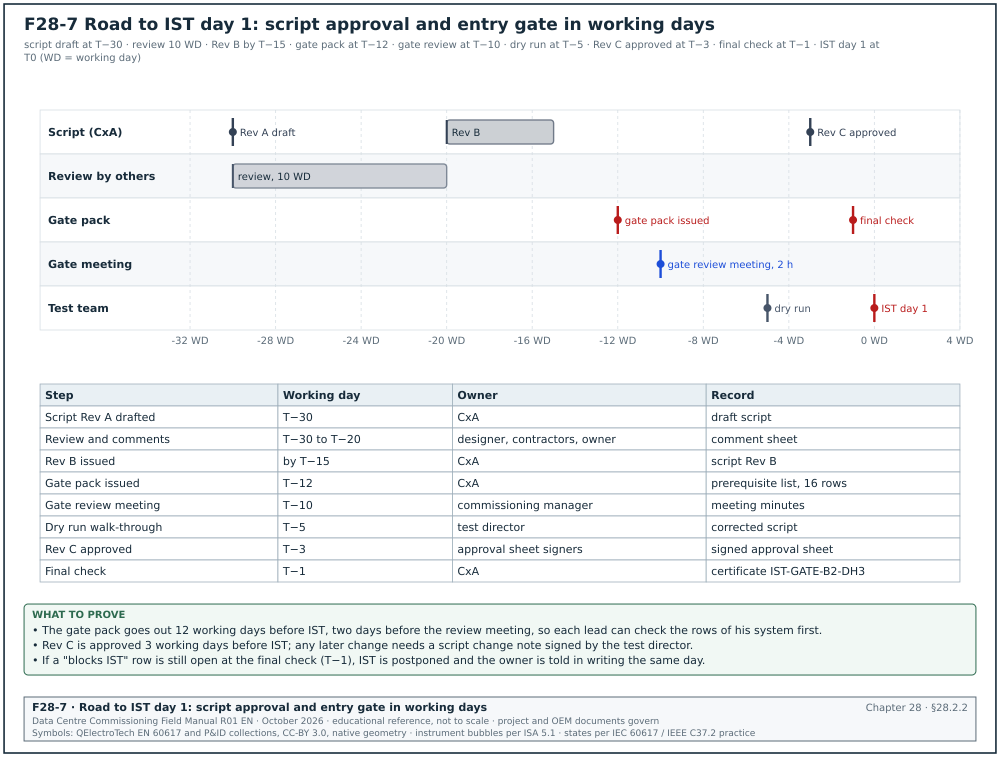
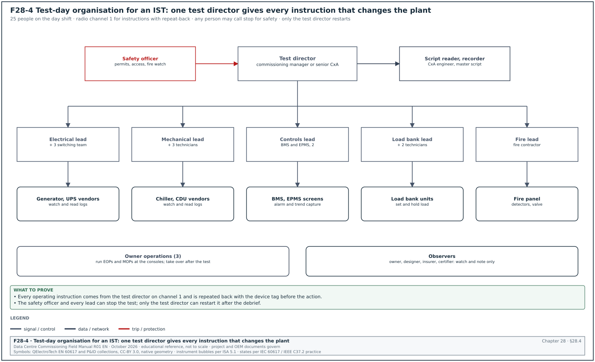
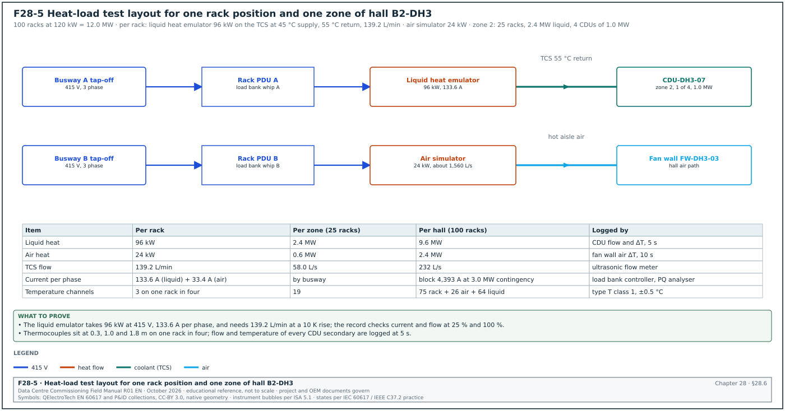
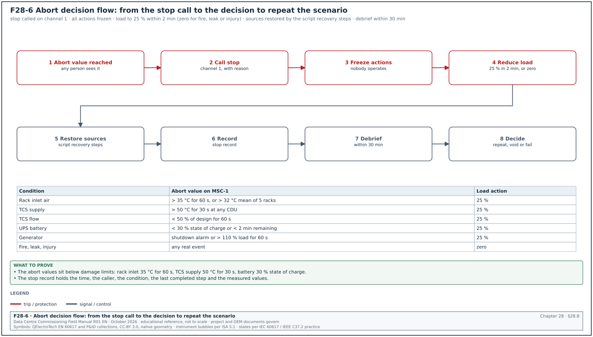
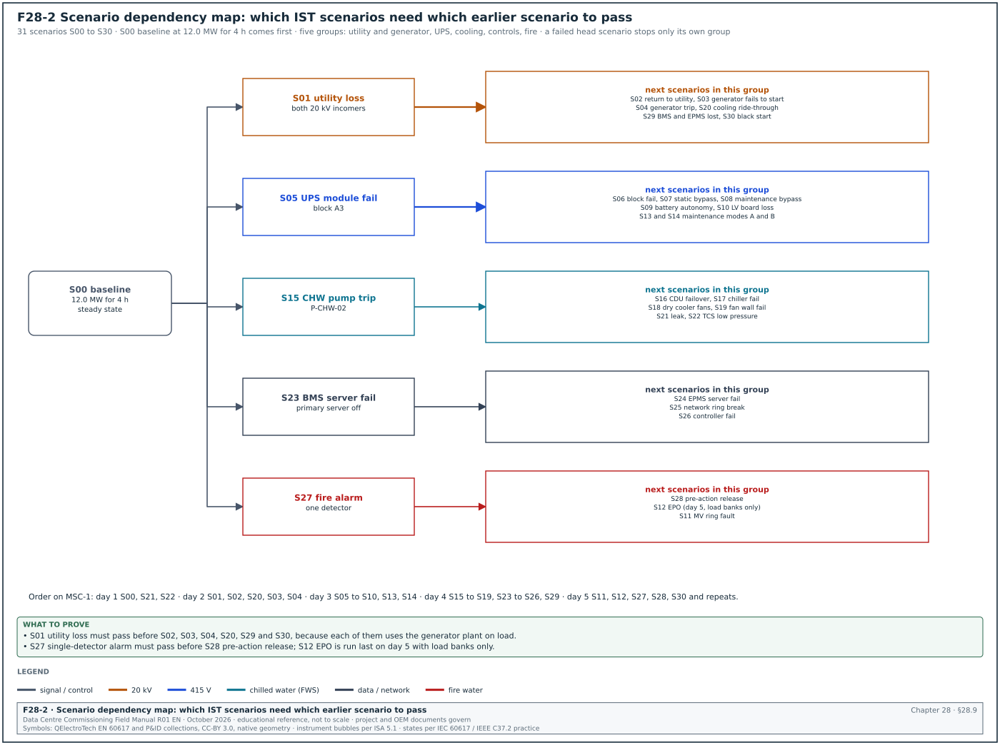
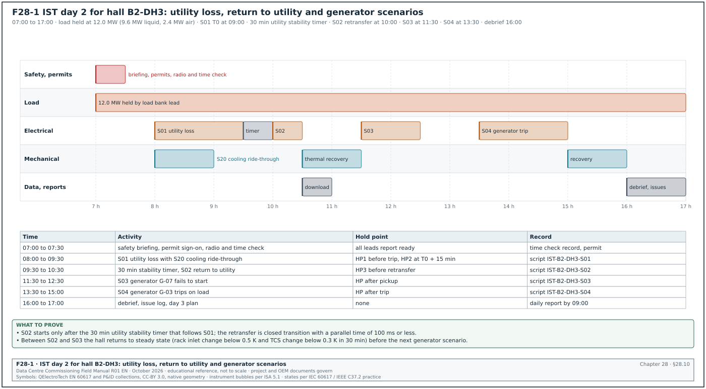
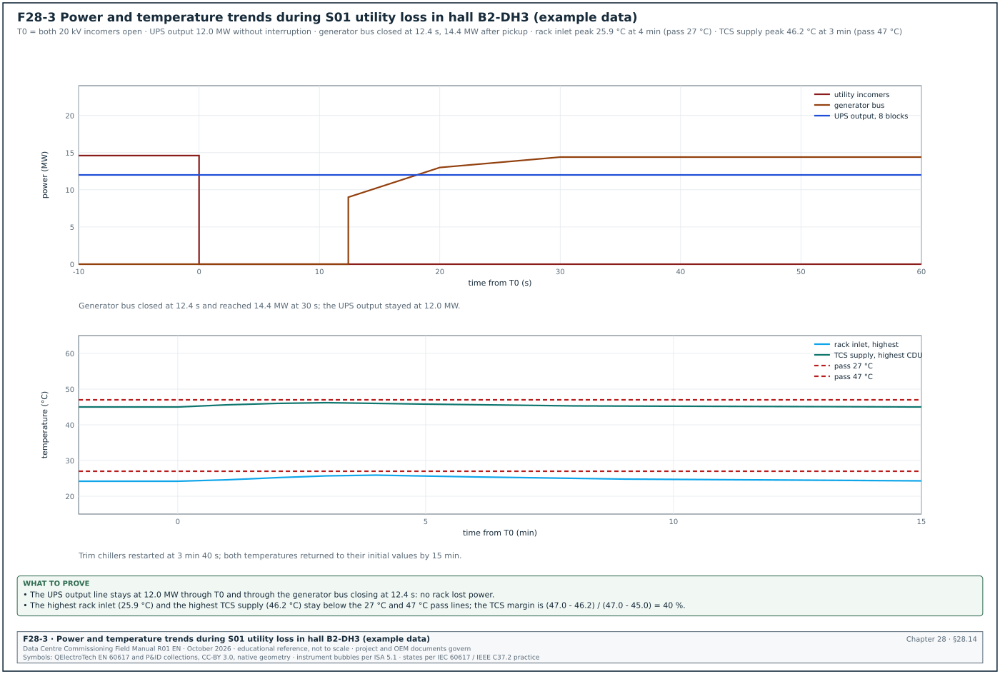

28.0Scope of this chapter
This chapter covers integrated systems testing (IST), the fifth and last level (L5) of data-centre commissioning. In IST the electrical, mechanical, liquid cooling, controls, monitoring and fire systems of one data hall run together under simulated full IT load. The commissioning team applies planned failures to prove that the hall keeps the IT load powered and cooled. The chapter gives a commissioning manager what he needs to plan, run, stop, analyse and report an IST.
- Definition and purpose. What IST is, how it differs from the L4 functional performance tests and why a hall does not go live without it.
- Entry gate. The prerequisites from L1 to L4, the readiness review and the records that must be signed before the first IST day.
- Script structure. The fields of an IST script, the step format and the hold points.
- Roles on test day. The test director, the system leads, the observers, the safety officer and their authority to stop a test.
- Instrumentation. Power quality analysers, thermocouple loggers, flow and pressure instruments, sequence of events (SOE) recorders, time synchronisation and logging intervals.
- Load banks and heat emulators. Dry resistive load banks, rack-mounted load simulators, liquid heat emulators for the technology cooling system (TCS), placement, stabilisation and kW per rack.
- Acceptance and abort criteria. The pass values for each measured quantity, with their source, and the limits at which the test stops.
- Scenario library. A table of 30 IST scenarios with trigger, expected response, measured quantities, pass criteria and abort criteria, and a dependency map.
- Test-day plan. The five-day IST programme for one hall in the MSC-1 worked example.
- Three full scripts. Utility loss at full load with return to utility, coolant distribution unit (CDU) failover, and fire alarm with pre-action release in a data hall, each with filled record tables.
- Results analysis and reporting. Trend plots, ride-through calculations, the IST report and the issue log.
- Common errors and a site checklist.
Documents and standards used: ANSI/ASHRAE/IES Standard 202-2024 (the commissioning process), ASHRAE Guideline 0-2019 (the commissioning process guideline), Uptime Institute Tier Standard: Topology and Tier Standard: Operational Sustainability, ASHRAE Technical Committee (TC) 9.9 Thermal Guidelines for Data Processing Environments (5th edition, 2021). The test standards are IEC 61000-4-30 (power quality measurement methods), IEC 62040-3:2021 (uninterruptible power supply (UPS) performance), ISO 8528-5 (generating set transient performance), NFPA 110 (emergency and standby power systems) and IEC 60584-1 (thermocouple tolerances). The chapter also uses the Information Technology Industry Council (ITIC) curve application note (the successor of the Computer and Business Equipment Manufacturers Association (CBEMA) curve), Schneider Electric White Paper 148 (Data Center Projects: Commissioning), and published load-bank practice from Aggreko and Avtron. Where a value comes from a secondary source, the text names that source and the exact document or table to check it against.
28.1What IST is and why it exists
28.1.1Definition
Integrated systems testing is a set of planned tests in which all systems that serve a data hall operate together at design load. The test team applies normal events (start-up, transfer, return to utility) and abnormal events (component failure, loss of a source, fire alarm) to that hall. The test proves that the systems interact as the design intends. A training guide for the BICSI data-centre design credential, Data Center Design Consultant (DCDC), describes L5 IST as the stage that "evaluates the entire facility operating under 100% simulated design electrical and thermal load" (research note RF-28, row 5).
The level ladder L1 to L5 is industry practice. Its numbering and names come from the project commissioning plan, and they differ between owners. Hyperscale programmes use the following ladder.
| Level | Name | What it proves | Typical record |
|---|---|---|---|
| L1 | Factory acceptance test (FAT) | the equipment meets its specification at the factory | FAT report signed by vendor and witness |
| L2 | Delivery and installation inspection | the equipment arrived undamaged and is installed per drawings | receiving record, L2 installation checklist |
| L3 | Pre-functional checks and start-up | each device is wired, set and starts under the vendor | L3 checklist, start-up report |
| L4 | Functional performance test (FPT) | each system performs its sequences on its own | L4 FPT script, signed |
| L5 | Integrated systems test (IST) | all systems together keep the IT load powered and cooled through events | L5 IST script, IST report |
28.1.2How IST differs from L4
An L4 functional test checks one system against its own sequence. For example, the L4 test of the UPS proves that the UPS transfers to battery when its input fails. IST checks what happens to every other system at the same time. When the utility fails, the UPS goes to battery and the generators start and synchronise. The mechanical switchboards lose power for up to 15 s (the MSC-1 limit for closing the generator bus to the mechanical boards; S01 measured 12.4 s). The chilled-water pumps stop and restart, the chillers wait for their anti-recycle timers and the CDUs ride through on their own UPS supply. The building management system (BMS) and the electrical power monitoring system (EPMS) record all of it. A fault in the interaction between two systems that each passed L4 is the type of fault IST finds.
- Interaction faults. A pump variable frequency drive (VFD) fed from a non-UPS board restarts 45 s after generator power returns, while the chiller anti-recycle timer adds 4 minutes. A published IST example shows this case (RF-28, row 7).
- Load faults. A breaker setting that passed L4 at 30 % load trips at 100 % load during a transfer, because the inrush of restarting pumps adds to the steady load.
- Thermal faults. Rack inlet temperature rises above the ASHRAE recommended limit during the cooling restart, because the thermal storage was sized for a shorter gap.
- Controls faults. The BMS raises 2,000 alarms in 10 s and the operator cannot find the alarm that matters.
- Procedure faults. The emergency operating procedure (EOP) tells the operator to open a valve that the design removed.
28.1.3Electrical IST and heat-load test
Some projects split IST into two parts: a heat-load test of the mechanical systems and an electrical integrated test (RF-28, row 19). Halls with liquid cooling at 120 kW per rack run both together, because the electrical events stop and restart the cooling and the cooling plant load changes the electrical load. The MSC-1 worked example runs one combined IST per hall.
28.1.4Why a hall does not go live without IST
Purpose: IST is the last point at which a failure costs only test time. After IT equipment arrives, the same failure stops customer workloads.
- Risk transfer. The owner accepts the hall for operation only when the IST report shows every scenario passed or has an accepted deviation.
- Tier certification. Where the owner seeks Uptime Institute Tier certification of the constructed facility, the demonstrations of concurrent maintainability (Tier III) or fault tolerance (Tier IV) are run during or after IST. The Tier Certification of Constructed Facility (TCCF) agreement between the owner and Uptime Institute lists the demonstrations. No public list was found for this manual.
- Operator training. The facility operations team runs the emergency operating procedures (EOPs) and methods of procedure (MOPs) during IST, on live plant, before any IT load is at risk.
- Baseline data. The IST trend data becomes the reference for the first year of operation: pump power at design flow, UPS losses, rack inlet temperature spread.
28.2Prerequisites and the IST entry gate
28.2.1Prerequisite list
IST starts only when the levels below it are closed for every system that serves the hall. The commissioning manager runs an entry gate review 10 working days before the first IST day and a final check 1 working day before.
| No. | Prerequisite | Record that proves it | Owner | Blocks IST if missing |
|---|---|---|---|---|
| 1 | L4 FPT signed for every system serving the hall | L4 FPT register, 100 % signed | commissioning authority (CxA) | yes |
| 2 | No open category A issue; category B issues reviewed | issue log extract, signed | CxA | yes (A); test director decides (B) |
| 3 | Protection settings applied and tested | relay settings record and secondary injection reports (chapter 14) | electrical contractor | yes |
| 4 | Generator load bank tests passed | generator L4 test reports (chapter 15) | generator vendor | yes |
| 5 | UPS and battery discharge tests passed | UPS L4 report, battery capacity test record (chapter 16) | UPS vendor | yes |
| 6 | Mechanical testing, adjusting and balancing (TAB) and CDU tests passed | TAB report, CDU L4 report (chapters 18 and 19) | mechanical contractor | yes |
| 7 | BMS and EPMS point-to-point and alarm tests passed | BMS L4 report, EPMS L4 report (chapters 22 and 24) | controls contractor | yes |
| 8 | Fire alarm and suppression acceptance with the authority | fire acceptance certificate (chapter 20) | fire contractor | yes for fire scenarios |
| 9 | Network ring failover test passed | operational technology (OT) network test record (chapter 26) | network contractor | yes |
| 10 | Load banks and heat emulators delivered, installed, tested at 25 % | load bank installation record | load bank vendor | yes |
| 11 | IST instrumentation installed, calibrated, time-synchronised | instrument register with certificates, time check record | CxA | yes |
| 12 | IST scripts approved by designer, owner and contractors | script approval sheet | commissioning manager | yes |
| 13 | EOPs and MOPs issued for the scenarios | EOP and method of procedure (MOP) register | owner operations | yes |
| 14 | Permit to work and switching programme for each day | approved permits (chapter 10) | electrical authorised person | yes |
| 15 | Emergency response plan, first aid, fire watch | safety plan, signed by safety officer | contractor safety officer | yes |
| 16 | Utility notified of planned utility breaker operations | utility notification letter | owner | yes for utility scenarios |
28.2.2Entry gate review procedure
The entry gate review and the script approval of section 28.3.5 run on the same calendar. Figure F28-7 shows both in working days before the first IST day, from the script draft at T−30 to the final check at T−1.


Trigger: the last L4 test of the hall is signed, or 10 working days before the planned IST start, whichever is earlier.
Owner: the commissioning manager.
Steps:
- Issue the gate pack. The CxA issues the prerequisite list with the status of each row 12 working days before IST. Each row shows the record number and the date signed.
- Hold the review meeting. The commissioning manager chairs a 2-hour meeting 10 working days before IST with the test director, each system lead, the data-centre operations (DCOps) lead and the safety officer. Each lead confirms the rows of his system.
- Classify the gaps. Each missing row is classed as "blocks IST", "blocks one scenario" or "accepted with a workaround". A missing L4 record always blocks the scenarios that use that system.
- Agree the recovery dates. The responsible contractor gives a date for each gap. The CxA records the dates in the gate pack.
- Run the final check. One working day before IST, the CxA checks every gap again. If a "blocks IST" row is still open, the commissioning manager postpones IST and informs the owner in writing the same day.
- Sign the gate certificate. The commissioning manager, the CxA and the owner representative sign the IST entry certificate IST-GATE-B2-DH3.
Acceptance: all 16 rows closed, or open rows accepted in writing with the scenarios they affect removed from the day plan.
Records: gate pack, meeting minutes, entry certificate.
28.2.3Gate certificate fields
| Field | Type | Example value |
|---|---|---|
| Certificate number | text | IST-GATE-B2-DH3 |
| Hall | text | Building B2, data hall DH3 |
| Planned IST start | date | 2026-11-16 |
| Prerequisites closed | number of 16 | 15 |
| Open rows and decision | text | row 13: EOP-ELE-07 in draft; scenario S07 moved to day 4 |
| Load at gate | MW | 3.0 (25 % load bank check) |
| Instruments registered | number | 412 channels |
| Signatures | names, dates | commissioning manager, CxA, owner representative |
Common errors:
- Signing on a promise. The gate is signed because the contractor says the last L4 report "will be issued tomorrow". Accept only signed records.
- Missing upstream systems. The prerequisite list covers the hall only and omits the central plant, the medium-voltage (MV) ring and the generator plant that serve it.
- Unchecked load bank controls. The load bank control cables are installed but the 25 % check was never run, and on day 1 two banks do not respond.
28.3IST script structure
28.3.1What a script is
An IST script is the controlled document that tells each person on the test what to do, when, and what result to record. One script covers one scenario. The script is approved before the test and becomes the test record when it is filled and signed.
28.3.2Script header fields
| Field | Type | Example value |
|---|---|---|
| Script number | text | IST-B2-DH3-S01 |
| Revision | text | Rev C, approved 2026-11-09 |
| Scenario title | text | Utility loss at 100 % load and return to utility |
| Systems involved | list | medium voltage (MV), low voltage (LV), generators, UPS, chilled-water (CHW) plant, CDU, computer room air handler (CRAH), BMS, EPMS |
| Initial conditions | list | utility on both MV feeders, 12.0 MW IT load, CHW 18 °C supply |
| Load required | MW | 12.0 IT (9.6 liquid, 2.4 air) |
| Expected duration | minutes | 90 |
| Prerequisite scenarios | list | S00 baseline at 100 % for 4 h |
| Risk assessment (RA) number | text | RA-IST-S01 |
| EOP and MOP used | list | EOP-ELE-01, MOP-ELE-RT-01 |
| Permit to work (PTW) number | text | PTW-B2-2026-1184 |
| Approvals | names | designer, owner, contractor leads, CxA |
28.3.3Step format
Each step has one action, one role and one expected result. A step that needs a decision is a hold point.
| Column | Content | Example |
|---|---|---|
| Step | number | 7 |
| Time | planned clock time or offset | T0 + 0 s |
| Role | one role | electrical lead |
| Action | one action with the device tag | open 20 kV incomer B2-MV-IN-1 and B2-MV-IN-2 by relay test trip |
| Expected result | value or state | UPS on battery with no output gap; generators start |
| Measured result | value | filled during the test |
| Pass or fail | P or F | filled during the test |
| Initials | text | filled during the test |
28.3.4Hold points
A hold point is a step at which the test stops until the test director gives the next instruction. Each script has hold points at these places.
- Before the first event. The test director checks that all loggers are recording, that the load is at the set value for the stabilisation period and that every observer is in position.
- After each event. The system leads report the state of their systems. The test director checks that no abort criterion is reached.
- Before the return to normal. The test director confirms that the recovery conditions (for example the utility stability timer) are met.
- At the end. The test director confirms the hall is back at the initial conditions before the next scenario starts.
28.3.5Approval of scripts
- Draft. The CxA drafts the script from the design sequences, the cause-and-effect matrix and the vendor procedures 30 working days before IST.
- Review. The designer, each contractor and owner operations review the draft in 10 working days and return comments on the comment sheet.
- Revise. The CxA answers each comment and issues Rev B within 5 working days.
- Dry run. The test director and the system leads walk through each script in the hall and at the panels, without operating anything, 5 working days before IST. Each wrong tag or missing step is corrected.
- Approve. The approval sheet is signed and Rev C is issued 3 working days before IST. No change is made after this without a script change note signed by the test director.
28.4Roles on test day


28.4.1Roles and authority
Figure F28-4 shows the test-day organisation. One person, the test director, gives every instruction that changes the plant. Every other person reports to him through the system leads.
| Role | Who on MSC-1 | Duties | Authority |
|---|---|---|---|
| Test director | commissioning manager or senior CxA | runs the script, calls each step and hold point, decides pass, fail, repeat or abort | stops or starts any step |
| Script reader and recorder | CxA engineer | reads each step aloud, records times and results on the master script | none |
| Electrical lead | electrical contractor commissioning engineer | operates MV and LV switching, reports electrical state | stops on electrical safety grounds |
| Mechanical lead | mechanical contractor commissioning engineer | reports plant state, operates mechanical isolations | stops on mechanical safety grounds |
| Controls lead | BMS and EPMS contractor engineer | reports alarms and trends, takes screen captures | none |
| Load bank lead | load bank vendor engineer | sets and holds the load, reports load bank alarms | trips load banks on vendor safety grounds |
| Vendor engineers | UPS, generator, chiller, CDU vendors | watch their equipment, read event logs | stops if equipment damage is imminent |
| Owner operations | facility shift lead and operators | run the EOPs and MOPs, watch the BMS and EPMS consoles | none during test; takes over after |
| Safety officer | contractor health and safety manager | watches access, permits, fire watch | stops any step for a safety reason |
| Observers | owner, designer, insurer, certifier | watch and note; do not operate | none |
Any person on the test may call "stop" for safety, and every person stops at once. Only the test director restarts the test.
28.4.2Communication rules
- One radio channel for instructions. The test director uses channel 1. System leads answer on channel 1. Side discussions use channel 2.
- Repeat-back. The person who receives an operating instruction repeats it with the device tag before acting. Example: "Open B2-MV-IN-1, electrical lead, understood."
- Standard words. "Hold" means wait in the present state. "Stop" means stop all actions and go to a safe state. "Abort" means end the scenario and run the recovery steps.
- Clock. All persons use the time shown on the IST master clock display, which reads the same Global Positioning System (GPS) time as the loggers.
- Positions. Each lead stands at his system's panel or at the location in the script. The test director stays at the IST control desk with the BMS, EPMS and logger screens.
28.4.3Staffing for one hall IST day
| Role | Number | Shift |
|---|---|---|
| Test director | 1 | day (07:00 to 19:00) |
| Script reader and recorder | 1 | day |
| Electrical lead and switching team | 1 + 3 | day |
| Mechanical lead and technicians | 1 + 3 | day |
| Controls lead | 2 (BMS, EPMS) | day |
| Load bank lead and technicians | 1 + 2 | day and night watch |
| Vendor engineers | 4 (UPS, generator, chiller, CDU) | day |
| Owner operations | 3 | day and night |
| Safety officer and fire watch | 1 + 2 | day and night |
| Total on day shift | 25 | — |
28.5Instrumentation and data loggers
28.5.1What must be measured
IST produces the record that a scenario passed. The building management system (BMS) and the electrical power monitoring system (EPMS) record many values, but their sensors and their logging intervals are set for operation. IST adds independent instruments with known accuracy and a short logging interval, so that a transient of 20 ms or a temperature rise of 1 K per minute is visible.
| Quantity | Instrument | Accuracy or class | Logging interval | Location in MSC-1 hall |
|---|---|---|---|---|
| Voltage, current, power, frequency, sags, transients | power quality (PQ) analyser, IEC 61000-4-30 Class A | voltage ±0.1 % of declared input; frequency ±0.01 Hz | waveform capture on trigger; 10-cycle (200 ms at 50 Hz) values; 1 s trends | UPS output A and B per block, generator bus, MV incomers |
| Breaker and transfer events | SOE recorder or relay event logs with GPS time | 1 ms time stamp | event | MV and LV breakers, UPS, static switches |
| Rack inlet air temperature | type T thermocouples on a multichannel logger | ±0.5 °C (IEC 60584-1 class 1) plus logger error | 10 s | 3 heights on 1 rack in every 4 (front door) |
| Supply and return air of CRAH and fan wall | type T thermocouples or resistance temperature detector (RTD) probes | ±0.5 °C | 10 s | each air handler |
| TCS supply and return temperature | clamp-on or immersion RTD, class A, 3- or 4-wire | ±(0.15 + 0.002 | t | ) °C, so ±0.24 °C at 45 °C (IEC 60751:2008 class A; the 2022 edition changed the class rules, so read the class on the sensor certificate) |
| TCS and facility water system (FWS) flow | ultrasonic clamp-on flow meter or calibrated in-line meter | ±1 to 2 % of reading (manufacturer data) | 5 s | CDU secondary, FWS header |
| Differential pressure | calibrated pressure transmitter | ±0.25 % of span | 5 s | CDU secondary, CHW risers |
| Room temperature and humidity | combined logger | ±0.3 °C, ±2 % relative humidity (RH) (manufacturer data) | 60 s | hall at 4 points, hot aisle at 4 points |
| Load bank load | load bank controller log | per vendor (for example ±1 % of kW) | 1 s | each load bank group |
| Generator and UPS data | equipment controller logs | per vendor | event and 1 s | each unit |
The IEC 61000-4-30 Class A uncertainty values come from the Fluke summary of the standard and the Schneider technical note on ION meters (RF-28, row 13). The thermocouple tolerances come from IEC 60584-1 as published by thermocouple suppliers (RF-28, row 15).
28.5.2Thermocouple selection
- Type T for air and water. Type T (copper-constantan) class 1 has a tolerance of ±0.5 °C from −40 to 125 °C, which covers all data-hall air and water temperatures.
- Type K only for hot surfaces. Type K class 1 has ±1.5 °C up to 375 °C. Do not use it for rack inlet measurement, because 1.5 °C is a large part of the margin between 27 °C and the allowable limit.
- System accuracy. The logger adds its own error and the cold junction compensation error. Calibrate each logger channel with its thermocouple at two points (for example 20 °C and 50 °C) in a dry-block calibrator before IST and accept a channel when the system error is within ±0.5 °C.
- Mounting. Fix the junction in free air 50 mm in front of the rack door with a non-metallic clip. A junction taped to a metal door reads the door temperature.
- Labels. Label each thermocouple with the channel and the rack, for example "L03-CH14 / R-DH3-B07 / mid".
28.5.3Time synchronisation
Every instrument and every system log must use the same time so that the order of events can be read. The test director checks the time of each device before the first scenario of each day.
- Reference. A GPS clock in the IST control desk is the reference. The EPMS time server and the relay time sources use the same GPS time (chapter 24).
- Check method. The controls lead triggers a test event (for example a contact into an SOE input) at a whole GPS second and reads the time stamp in every system that records it.
- Acceptance. SOE devices and relays within 1 ms; PQ analysers within 10 ms; BMS controllers and loggers within 1 s; load bank controllers within 1 s.
- Record. The time check record lists each device, its time source, its offset and the person who checked it.
28.5.4Logging intervals and trigger settings
- PQ analyser triggers. Set the voltage sag trigger at 90 % of nominal, the swell trigger at 110 %, and capture at least 10 cycles before and 50 cycles after each trigger.
- Continuous PQ trend. Record 1 s root-mean-square (RMS) voltage, current, kW and frequency for the whole day.
- Temperature loggers. Use 10 s for rack inlet and air handler temperatures. A 60 s interval misses the peak of a short cooling interruption.
- Liquid loop loggers. Use 5 s for CDU supply temperature, flow and differential pressure.
- BMS trend. Set BMS trends for the hall to change-of-value or 10 s during IST and return them to the operating setting after IST.
- Storage. Each logger stores at least 7 days of data at these intervals. The controls lead downloads all data at the end of each day and copies it to two locations.
28.5.5Instrument register fields
| Field | Type | Example value |
|---|---|---|
| Channel ID | text | L03-CH14 |
| Instrument | text | 32-channel thermocouple logger, serial 2219-0457 |
| Sensor | text | type T class 1, 2 m lead |
| Location | text | rack R-DH3-B07, front, mid height (1.0 m) |
| Measured quantity | text | rack inlet air temperature |
| Range and unit | text | 0 to 60 °C |
| Calibration certificate | text | CAL-2026-1043, valid to 2027-08-31 |
| Two-point check result | °C | +0.2 at 20 °C, +0.3 at 50 °C |
| Logging interval | s | 10 |
| Time offset at daily check | s | 0.4 |
Worked example: channel count for one MSC-1 hall. The hall has 100 racks at 120 kW. One rack in four carries three thermocouples (bottom 0.3 m, middle 1.0 m, top 1.8 m): 25 racks × 3 = 75 channels. The air side has 13 air handlers (the MSC-1 CRAH count of chapter 21) with supply and return: 26 channels. The liquid side has 16 CDUs with secondary supply and return temperature, flow and differential pressure: 64 channels. Room and hot-aisle loggers add 8. Electrical PQ analysers sit on 8 blocks × 2 UPS outputs = 16 points, plus 4 on the generator bus and MV incomers: 20 analysers. The total is about 173 temperature and liquid channels plus 20 PQ analysers. At 10 s for 173 channels over a 12-hour day the loggers store 173 × 4,320 = 747,360 readings per day.
28.6Load banks and heat emulators


28.6.1Why IST needs simulated load
The hall has no IT equipment during IST. Load banks take electrical power and turn it into heat. They give the electrical systems their design current and the cooling systems their design heat. An IST at 10 % load does not test the design limits. Breakers do not reach their pickup, UPS modules do not reach their thermal limits, and the cooling plant does not reach its design flow.
28.6.2Types of load bank used in IST
| Type | What it simulates | Typical size | Connection | Heat goes to |
|---|---|---|---|---|
| Floor-standing resistive load bank | electrical load only, or air heat | 100 to 500 kW | busway tap-off box or power distribution unit (PDU) output | hall air or outside (ducted) |
| Rack-mounted load simulator ("server simulator") | rack power and rack air flow | 3 to 50 kW per unit | rack PDU sockets | rack exhaust air into the hot aisle |
| Liquid heat emulator (liquid-cooled load bank) | heat into the TCS loop | 100 to 500 kW | rack PDU or busway for power; TCS manifold for water | TCS water |
| Resistive-reactive load bank | kW and kvar, power factor below 1 | 500 to 2,500 kVA | generator bus or LV board | outside air |
| DC load bank | battery discharge load | per battery string | battery DC bus | air |
A published IST in Jakarta used 12 digital load banks of 200 kW on two overhead busways to load a 1,450 kW hall to 1,500 kW. One laptop controlled all banks together and logged kW, voltage and frequency (RF-28, row 8). The same case notes that earlier practice in Asia used many small 3 kW heaters, which made load control and data logging inaccurate (RF-28, row 9).
28.6.3Air flow of rack simulators
A rack-mounted simulator should move air at the rate of the servers it replaces, because the cooling system responds to air flow and heat. A published guide gives 120 to 160 cubic feet per minute (CFM) per kW (about 57 to 76 L/s per kW) for server simulators (RF-28, row 6). The project value comes from the load-bank original equipment manufacturer (OEM) data sheet and the IT equipment design value. In the MSC-1 worked example, the air-cooled part of each rack is 20 % of 120 kW = 24 kW. At a mid value of 65 L/s per kW, each rack simulator for the air portion moves about 24 × 65 = 1,560 L/s. The hall air design flow of 168.5 m³/s for 2.4 MW gives 70 L/s per kW, which agrees.
28.6.4Load plan for one MSC-1 hall
In the MSC-1 worked example, each hall has 100 racks at 120 kW (12.0 MW IT). The ledger capture ratio is 0.8: 9.6 MW goes into the TCS liquid loop and 2.4 MW goes into the air.
| Load source | Power | Simulates | Connection | Count |
|---|---|---|---|---|
| Liquid heat emulators | 9.6 MW | direct-to-chip heat into TCS at 45 °C supply, 55 °C return | rack power whips; TCS quick connects | 100 units of 100 kW set at 96 kW, one per rack (example fleet; the load-bank vendor equipment list sets the unit rating) |
| Air heaters (rack simulators) | 2.4 MW | rack air heat | rack PDU sockets | 100 racks × 24 kW |
| Dry load bank set | 6.0 MW | extra electrical load on the generator and LV boards when the hall load must exceed 12 MW, or load on blocks without heat | busway tap-off or LV test feeder | 12 × 500 kW |
| Reactive load | 1.0 Mvar | power factor below 1 for generator tests | generator bus | 1 resistive-reactive bank |
The electrical IT load is 12.0 MW. The 2.4 MW air heaters and the 9.6 MW liquid emulators carry the whole 12.0 MW so that the hall heat equals its electrical load. The 6.0 MW dry set serves block overload scenarios and generator tests where the heat is not wanted in the hall.
Worked example: current in one UPS block. The hall has 8 blocks of 1.5 MW. In the block failure scenario one block carries its own load and that of a failed partner. The block load is 3.0 MW at 415 V and power factor 0.95, so I = 3,000 kW / (√3 × 0.415 kV × 0.95) = 3,000 / 0.6829 = 4,393 A per block (case ledger value ist_block_a). Before the scenario, the load bank lead confirms that the busway tap-off boxes and the load bank cables for that block are rated for this current. The electrical lead confirms that the block breaker long-time pickup sits above 4,393 A with the margin given in the protection study.
28.6.5Load bank installation and stabilisation
Steps:
- Install. The load bank vendor installs each unit per the load bank layout drawing (Figure F28-5), with cables sized for 125 % of the unit current and connections torqued to the vendor value.
- Test at 25 %. The vendor energises each unit at 25 % and checks phase rotation, current balance within 10 % and fan operation. Record per unit.
- Step to 50 %, 75 %, 100 %. The load bank lead raises the load in steps of 25 % with a hold of 30 minutes at each step. The electrical lead checks breaker and cable temperatures by thermal imaging at each step.
- Stabilise. The load is held at 100 % until the hall is in thermal steady state. Steady state is reached when every rack inlet temperature changes by less than 0.5 K in 30 minutes and every CDU supply temperature changes by less than 0.3 K in 30 minutes. On MSC-1 this took 2 to 4 hours (the S00 baseline).
- Hold during scenarios. The load bank lead holds the set load. Load banks with automatic restart after a supply interruption must be set to restart with a delay. The load then returns the way IT servers return (for example all units within 1 to 5 s after power returns). Load banks without UPS supply on their own fans must be reviewed: if their fans stop during an interruption, they can overheat when the heater returns.
| Field | Type | Example value |
|---|---|---|
| Load bank ID | text | LB-DH3-L17 |
| Type and rating | text | liquid heat emulator, 100 kW, 415 V, set at 96 kW |
| Connected to | text | rack R-DH3-C04 whips A and B; CDU-DH3-07 manifold port 4 |
| Test at 25 % | A per phase | 34 / 35 / 34 |
| Test at 100 % | A per phase | 133 / 134 / 133 |
| Water flow at 100 % | L/min | 140 |
| Water ΔT at 100 % | K | 9.9 |
| Alarms during test | text | none |
Common errors:
- Heat in the wrong place. Dry load banks placed in the hall add air heat that the liquid system was meant to remove; the air side then fails a test that the design would pass.
- Load banks on one path. All load banks are connected to the A whips only; a B-side failure then proves nothing about rack dual-cord transfer.
- No restart delay. All load banks return at once after an interruption, giving a load step that real IT equipment with staggered power supplies does not give.
- Unlogged load. Analogue heaters with no log leave the report without a measured load; the test then cannot show it ran at 100 %.
28.7Acceptance criteria
28.7.1How acceptance values are chosen
The acceptance value for every measured quantity comes from one of three places. In order of priority, they are the owner's project requirements (OPR) and the specification, the published standard named by the specification, and the OEM data for the equipment. The script states the source next to each value. Where the specification gives no value, the CxA proposes one from a standard and the designer approves it before the script is approved.
| Quantity | Acceptance value | Source |
|---|---|---|
| IT load continuity | no loss of power to any rack PDU (both cords) during any single-failure scenario | OPR; Uptime Tier III or IV objective |
| UPS output voltage transient on mode change | within the IEC 62040-3 dynamic class declared by the vendor (class 1 for double conversion, VFI-SS-111) | IEC 62040-3:2021, vendor data sheet (read the class 1 limits from the dynamic output performance curves of IEC 62040-3:2021) |
| Voltage at the IT equipment input | inside the ITIC curve: 0 V up to 20 ms, 70 % up to 0.5 s, 80 % up to 10 s, 90 % beyond 10 s | ITIC (CBEMA) curve application note; specification |
| Generator start to ready to accept load | within 10 s for the emergency loads where NFPA 110 Type 10 applies; project value for the standby plant (for example 15 s to bus, 30 s to full load) | NFPA 110; specification |
| Generator transient on load step | frequency dip ≤ 7 %, recovery ≤ 3 s; voltage dip ≤ 15 %, recovery ≤ 4 s (class G3, diesel) | ISO 8528-5:2022 Table 4, as reproduced in Kohler white paper TP-143 and Avtron "Testing diesel gen-sets to ISO 8528" |
| UPS battery autonomy during the event | battery state of charge stays above the value that leaves the design autonomy margin; on MSC-1 the design is 5 min at full block load | specification |
| Rack inlet air temperature | within the ASHRAE recommended range 18 to 27 °C at steady state; during a transient, within the allowable class of the IT equipment (A1: 15 to 32 °C) | ASHRAE TC 9.9, 5th edition (2021) |
| Rate of change of inlet temperature | ≤ 20 °C in any hour and ≤ 5 °C in any 15 minutes; ≤ 5 °C per hour where tape is present | ASHRAE Thermal Guidelines 4th edition (2015), footnote f of the class table (ASHRAE reference card) (confirm that the 5th edition, 2021, keeps footnote f unchanged) |
| TCS supply temperature | at the set point ±1 K at steady state; peak during a transient below the design limit of the IT cold plates (MSC-1: 45 °C set point, abort at 50 °C) | OPR, IT vendor liquid cooling specification |
| TCS flow per rack | ≥ design flow (MSC-1: 139.2 L/min per rack) within 10 s of a CDU failover | specification |
| Chilled water and FWS supply temperature | return to set point ±0.5 K within the time stated in the sequence (for example 15 min after chiller restart) | specification, sequence of operation |
| Alarms | every expected alarm received at the BMS or EPMS with correct text and priority within 10 s; no unexpected priority 1 alarm | specification, alarm matrix |
| Event time stamps | SOE events of one scenario in the correct order with resolution 1 ms | specification (chapter 24) |
| Recovery | all systems return to the initial state, with all auto modes restored, without manual action except where the EOP requires it | specification |
28.7.2Pass, fail and conditional pass
- Pass. Every acceptance value in the script is met and recorded.
- Fail. Any acceptance value is not met. The test director records the failure, raises an issue in the issue log with priority, and decides whether the scenario is repeated after the fix.
- Conditional pass. A minor value is missed and the designer and owner accept it in writing with a corrective action and date. Example: one alarm text is wrong on the BMS screen.
- Void. The test did not run as written (for example the load was 80 % when the event was triggered). A void test has no result and is repeated.
28.8Abort criteria and the stop procedure


28.8.1Abort criteria
An abort criterion is a measured value or a condition at which the test director ends the scenario and returns the hall to a safe state, before damage or injury. Abort criteria are set below the damage limit of the equipment and above the expected response, so that a normal test does not reach them.
| Condition | Abort value on MSC-1 | Reason |
|---|---|---|
| Rack inlet air temperature | any rack inlet > 35 °C for 60 s, or > 32 °C average over 5 racks | IT equipment allowable limit A2 is 35 °C; load banks are not damaged but the cooling has failed |
| TCS supply temperature | > 50 °C at any CDU secondary outlet for 30 s | 5 K above the 45 °C design supply; cold-plate design margin |
| TCS flow | < 50 % of design at any CDU for 60 s | load emulators reach their high-temperature cut-out |
| UPS battery | state of charge < 30 % or remaining time < 2 min on any block | the battery must keep reserve for a real event |
| Generator | any unit alarm "shutdown" or overload > 110 % for 60 s | protect the generator and the remaining units |
| Load bank | over-temperature alarm on more than 2 units, or any unit on fire alarm | equipment safety |
| Electrical | any unplanned trip of an MV breaker or of a main LV breaker | the scenario no longer matches the script |
| Fire | any real fire, smoke from equipment, or fire alarm outside the test zone | life safety |
| Leak | water detected outside the test drip trays | equipment and electrical safety |
| People | any injury, any person in a restricted zone, any permit breach | life safety |
| Communication | loss of radio channel 1 for more than 2 minutes | the test director cannot control the test |
28.8.2Stop procedure
Figure F28-6 shows the decision flow.
- Call the stop. The person who sees the condition calls "stop, stop, stop" on channel 1 with the reason.
- Freeze actions. Every person stops operating. Nobody opens or closes any device unless the test director orders it.
- Reduce load. The test director orders the load bank lead to reduce load to the agreed safe level (on MSC-1: 25 % within 2 minutes, or zero for fire, leak or injury).
- Restore sources. The electrical lead restores the normal sources by the recovery steps written in the script. The mechanical lead restores normal plant.
- Record. The script reader records the time of the stop, the reason, the last step completed and the measured values.
- Debrief. The test director holds a debrief within 30 minutes. The scenario is repeated only after the cause is known and the debrief record is signed.
Records: stop record (time, caller, condition, values), debrief record, issue log entry.
28.9Scenario library


28.9.1How the library is built
The scenario library lists every event that the hall must survive. The CxA builds it from four inputs. The first two are the design failure modes in the basis of design (BOD) and the redundancy claims in the OPR (for example "2N electrical, N+1 cooling"). The other two are the cause-and-effect matrix of the fire system and the operating modes in the sequences of operation (maintenance mode, return to normal). Each scenario has one trigger and one set of pass and abort criteria. Figure F28-2 shows which scenarios depend on which, so that a failed scenario stops only the scenarios that need it.
The values in the table are the MSC-1 worked-example values. A project replaces them with its own OPR and specification values.
28.9.2Electrical scenarios
| ID | Scenario and trigger | Expected response | Measured quantities | Pass criteria | Abort criteria |
|---|---|---|---|---|---|
| S00 | Baseline: 100 % load for 4 h, no event | all systems stable in auto | all channels | inlet 18 to 27 °C; TCS 45 ±1 °C; no alarm | any abort value in 28.8.1 |
| S01 | Utility loss on both 20 kV incomers (relay test trip) at 100 % load | UPS to battery with no output gap; generators start, synchronise and close; mechanical loads restart; chillers restart | UPS output V and I; generator start and close times; bus V and Hz; pump and chiller restart times; inlet and TCS temperatures | no rack loses power; generator bus ready ≤ 15 s; UPS returns to mains mode on generator; inlet ≤ 27 °C | battery < 30 %; inlet > 35 °C for 60 s; TCS > 50 °C |
| S02 | Return to utility after S01 (utility restored, 30 min stability timer) | closed-transition retransfer; generators unload and cool down | retransfer time; parallel time; V and Hz at bus | no interruption to any load; parallel time within utility limit (for example ≤ 100 ms) | any unplanned trip |
| S03 | One generator fails to start during S01 (start signal blocked on G-07) | remaining units carry the load; load shed of non-critical loads if programmed | units on bus; bus kW; frequency; load shed signals | N units carry building load; bus frequency within ±2 % at steady state | any unit overload > 110 % for 60 s |
| S04 | Generator trips while on load (emergency stop of G-03 at 80 % plant load) | remaining units pick up its share; frequency dip and recovery | frequency dip and recovery time; kW per unit | frequency dip ≤ 7 %, recovery ≤ 3 s (ISO 8528-5:2022 Table 4, class G3) | second unit trip |
| S05 | UPS module failure (one module of block A3 forced off by vendor test command) | remaining modules carry block load; no transfer to bypass | output V transient; module kW; alarms | output inside IEC 62040-3 class 1 curve; no bypass | UPS on bypass; output loss |
| S06 | UPS block failure (block A3 output breaker opened) | rack PDUs on B side carry full rack load; block B3 rises to its contingency load | rack PDU B currents; B3 kW; inlet temperatures | no rack loss; B3 below its rating; currents per 28.6.4 | B3 > 100 % rating |
| S07 | UPS transfer to static bypass and back (vendor command) | static switch transfer with no output gap | output V transient; transfer time | inside ITIC curve; transfer recorded in SOE | output loss |
| S08 | UPS maintenance bypass (MOP: close maintenance bypass, open UPS input and output) | block on raw mains, then return to UPS | sequence of breaker states; V at output | no interruption; interlocks prevent wrong order | wrong interlock operation |
| S09 | Battery autonomy at full block load on one block (input open, no generator) | block runs on battery; operator alarm; input restored at 3 min | battery V, I, time; state of charge | autonomy trend matches ≥ 5 min design | state of charge < 30 % |
| S10 | Loss of one LV main board (block transformer T-A5 upstream breaker opened) | block on UPS battery then on alternate source per design | breaker states; UPS mode; times | no rack loss; design source change time met | battery < 30 % |
| S11 | MV ring cable fault simulated (open ring section breaker under load) | ring reconfigures; no load loss | breaker times; bus V | no interruption downstream of UPS; mechanical loads per design | unplanned trips |
| S12 | Emergency power off (EPO) of hall DH3, test mode with load banks only | EPO opens the hall circuits shown in the cause-and-effect (C&E) matrix; alarms | EPO circuit breaker states; time to open | all listed breakers open ≤ 1 s; no breaker outside the list opens | any breaker outside the list opens |
| S13 | Maintenance mode A: A-side of hall isolated by MOP, then utility loss | B side carries the full hall; generators start for B side | B-side currents; temperatures | no rack loss; B side within rating | B side > 100 % |
| S14 | Maintenance mode B: mirror of S13 | as S13 for A side | as S13 | as S13 | as S13 |
28.9.3Mechanical and liquid cooling scenarios
| ID | Scenario and trigger | Expected response | Measured quantities | Pass criteria | Abort criteria |
|---|---|---|---|---|---|
| S15 | CHW pump trip (duty pump P-CHW-02 tripped at its starter) | standby pump starts; flow restored | header flow; differential pressure (DP); pump start time | flow ≥ 95 % of design within 30 s | inlet > 32 °C average |
| S16 | CDU failover (CDU-DH3-07 power removed on both feeds) | other CDUs in zone 2 raise flow; supply temperature held | TCS flow per CDU; supply temperature; DP | rack flow ≥ 139.2 L/min within 10 s; TCS peak ≤ 47 °C | TCS > 50 °C for 30 s; flow < 50 % for 60 s |
| S17 | Chiller fail (trim chiller CH-02 tripped at its panel) | next chiller starts; buffer tank supplies during start | chiller start time; CHW supply temperature | CHW supply back to 18 ±0.5 °C within 15 min | CHW > 24 °C |
| S18 | Dry cooler fan group failure (fan group DC-04 power off) | remaining dry coolers raise fan speed; FWS held | FWS supply temperature; fan speeds | FWS supply ≤ 35 °C + 1 K at design ambient | FWS > 41 °C |
| S19 | CRAH or fan wall unit failure (FW-DH3-03 off) | other fan walls raise speed; pressure held | hall differential pressure; inlet temperatures | inlet ≤ 27 °C; DP within ±20 % of set point | inlet > 32 °C average |
| S20 | Total cooling interruption ride-through at utility loss (part of S01) | thermal storage and UPS-fed pumps keep cooling | inlet and TCS temperatures; tank outlet temperature | inlet ≤ 27 °C; TCS ≤ 47 °C | as S01 |
| S21 | Leak detection under rack row C (wet rope sensor wetted with 50 mL water in a tray) | leak alarm with location; CDU isolation if programmed | alarm time; location text; valve state | alarm ≤ 10 s with correct zone; isolation per C&E | water outside tray |
| S22 | TCS low-pressure event (CDU make-up isolated and loop drained 2 L at a test point) | low-pressure alarm; make-up or pump protection | loop pressure; alarm time | alarm at set value; pumps protected | pump cavitation noise or pressure < 0.5 bar |
28.9.4Controls, network and fire scenarios
| ID | Scenario and trigger | Expected response | Measured quantities | Pass criteria | Abort criteria |
|---|---|---|---|---|---|
| S23 | BMS server failure (primary BMS server powered off) | standby server takes over; controllers keep running | takeover time; trend gaps; alarm delivery | takeover ≤ 60 s; no controller stops; trend gap ≤ takeover time | any plant stops |
| S24 | EPMS server failure (Power Monitoring Expert (PME) primary server stopped) | standby or meters buffer data; no loss of SOE | gap in data; SOE completeness | no SOE event lost after recovery | — |
| S25 | Network ring break (fibre pulled between two BMS ring switches) | ring heals; no controller offline | recovery time; packet loss | recovery inside the protocol value (chapter 26) | controllers offline > 60 s |
| S26 | Controller failure (CDU zone controller power off) | CDUs continue at last command or local control | CDU states; flows | no loss of cooling | flow < 50 % |
| S27 | Fire alarm in hall DH3, one detector (smoke aerosol) | pre-alarm or alarm per C&E; notification | panel times; BMS alarm | actions match C&E within 10 s | real smoke |
| S28 | Fire alarm with pre-action release in DH3 (two detectors, double interlock) | pre-action valve trips; pipe fills; C&E actions | trip time; water at test point; C&E outputs | all C&E actions; water at test point within project value | water outside the pipe network |
| S29 | Loss of BMS and EPMS together during utility loss (both servers off, then S01) | plant runs on local controllers; operator uses local panels | plant states; EOP times | no loss of load or cooling; EOP actions done in stated times | as S01 |
| S30 | Black start: all utility and all generator start signals blocked for 60 s, then released | UPS carries load on battery; generators start late and close | battery state of charge; times | no rack loss; battery above 30 % | battery < 30 % |
The library has 31 rows (S00 to S30). Every scenario has a stated abort value before the script is approved.
28.10IST programme for one hall


28.10.1Five-day plan
In the MSC-1 worked example each hall has 5 IST days, and the campus has 12 halls, so the campus needs 60 IST windows. Figure F28-1 shows the day plan for day 2.
| Day | Main activity | Scenarios | Load |
|---|---|---|---|
| Day 1 | load step-up 25 to 100 %, stabilisation, baseline | S00, S21, S22 | 3.0 to 12.0 MW |
| Day 2 | utility loss, return to utility, generator scenarios | S01, S02, S20, S03, S04 | 12.0 MW |
| Day 3 | UPS scenarios, maintenance modes | S05 to S10, S13, S14 | 12.0 MW |
| Day 4 | cooling scenarios and controls failures | S15 to S19, S23 to S26, S29 | 12.0 MW |
| Day 5 | fire, EPO, MV ring, black start, repeats | S11, S12, S27, S28, S30, repeats | 12.0 MW then 0 |
28.10.2Day 2 timeline
- 07:00 to 07:30. The safety officer gives the safety briefing and the electrical authorised person signs the team onto the permit. The test director runs the radio check and the controls lead records the time check of all instruments.
- 07:30 to 08:00. The load bank lead confirms that the load has been at 12.0 MW since the night before. The test director confirms that every lead is at his position for S01.
- 08:00 to 09:30. The test director runs S01 utility loss and S20 cooling ride-through on script IST-B2-DH3-S01. Hold point 1 is at 08:45 and T0, the trip of both incomers, is at 09:00, so the script steps at T0 + 30 min to T0 + 90 min fall in the next window.
- 09:30 to 10:30. The electrical lead runs the 30-minute utility stability timer from 09:30 and the S02 closed-transition retransfer at 10:00 (T0 + 60 min). Hold point 3 is at 10:30.
- 10:30 to 11:30. The mechanical lead reports thermal recovery to steady state. The controls lead downloads the data.
- 11:30 to 12:30. The test director runs S03 generator fail to start.
- 13:30 to 15:00. The test director runs S04 generator trip on load.
- 15:00 to 16:00. The system leads report recovery, and the CxA checks the baseline values against S00.
- 16:00 to 17:00. The test director holds the debrief. The CxA updates the issue log and issues the plan for day 3.
Check: two scenarios that use the same source are never run back to back without a recovery period. The recovery period ends when the steady-state test of 28.6.5 step 4 is met again.
28.11Script 1: utility loss at full load and return to utility (S01 and S02)
Purpose: prove that the hall keeps all 100 racks powered and cooled when both 20 kV utility incomers of building B2 open at full load, and that it returns to utility without interruption.
Inputs: approved script IST-B2-DH3-S01 Rev C; switching programme SP-B2-IST-02; EOP-ELE-01; utility notification; S00 baseline passed.
The initial conditions before step 1 are the following.
- Electrical state. Both 20 kV incomers closed; generators in auto, off; all UPS blocks in double-conversion mode with batteries at 100 % state of charge.
- Load. 12.0 MW IT load (9.6 MW liquid emulators, 2.4 MW air heaters), steady state for at least 4 hours.
- Cooling. CHW supply 18 °C, FWS supply 35 °C, TCS supply 45 °C, all in auto.
- Instruments. PQ analysers recording on all 16 UPS outputs and the generator bus; loggers at 10 s and 5 s; time check passed.
Steps:
| Step | Time | Role | Action | Expected result |
|---|---|---|---|---|
| 1 | T0 − 15 min | test director | hold point 1: confirm load, loggers, positions | all leads report ready |
| 2 | T0 − 5 min | controls lead | mark start of event on BMS and EPMS event logs | marker logged |
| 3 | T0 | electrical lead | open both incomers B2-MV-IN-1 and IN-2 by relay test trip | incomers open; SOE events |
| 4 | T0 to T0 + 1 s | electrical lead | read UPS mode | all 8 blocks on battery; no output gap |
| 5 | T0 + 15 s | electrical lead | read generator bus | generators synchronised, bus closed |
| 6 | T0 + 30 s | mechanical lead | read pump and CDU states | UPS-fed pumps ran through; others restarted |
| 7 | T0 + 5 min | mechanical lead | read chiller states | trim chillers restarted after anti-recycle delay |
| 8 | T0 + 15 min | test director | hold point 2: read temperatures and battery state | all inside pass values |
| 9 | T0 + 30 min | test director | instruct utility restore; start 30 min stability timer | utility healthy at incomers |
| 10 | T0 + 60 min | electrical lead | closed-transition retransfer by the generator controls | parallel ≤ 100 ms; no interruption |
| 11 | T0 + 65 min | electrical lead | generators unload and run cool-down | generators stop after cool-down (for example 5 min) |
| 12 | T0 + 90 min | test director | hold point 3: all systems at initial conditions | all auto modes restored |
Acceptance: the values in section 28.7.1 for continuity, UPS transient, generator time, temperatures, alarms and recovery.
28.11.1Filled record of S01 and S02
Worked example: the filled S01 and S02 record of hall DH3 in the MSC-1 worked example (example values).
| Measured quantity | Acceptance | Measured | Result |
|---|---|---|---|
| Rack PDUs that lost power | 0 | 0 of 200 | pass |
| UPS output voltage deviation at T0 (worst block A6) | inside class 1 curve | −2.1 % for 8 ms | pass |
| Generator first unit ready | ≤ 10 s | 7.8 s | pass |
| Generator bus closed to mechanical boards | ≤ 15 s | 12.4 s | pass |
| Building generator bus load after pickup | per design 14.6 MW (12.0 MW × power usage effectiveness (PUE) 1.22) | 14.4 MW | pass |
| Bus frequency dip at mechanical pickup | ≤ 7 % | 4.6 % (47.7 Hz), recovered in 2.1 s | pass |
| UPS battery state of charge lowest | ≥ 30 % | 98 % (battery for 12.4 s) | pass |
| Trim chiller restart | ≤ 5 min | 3 min 40 s | pass |
| Highest rack inlet temperature | ≤ 27 °C | 25.9 °C at T0 + 4 min | pass |
| Highest TCS supply temperature | ≤ 47 °C | 46.2 °C at T0 + 3 min | pass |
| Retransfer parallel time | ≤ 100 ms | 84 ms | pass |
| Unexpected priority 1 alarms | 0 | 1 (CH-02 "low oil pressure" during restart) | conditional pass, issue IST-DH3-014 |
The battery time is the gap between T0 and the generator bus closing to the UPS input: 12.4 s. At full block load of 1.5 MW, 12.4 s uses 1.5 × 12.4 / 3,600 = 0.0052 MWh = 5.2 kWh. Against the battery screen value of 301 kWh this is about 2 % of the battery energy, which agrees with the 98 % lowest state of charge reported by the UPS. The UPS operation manual states how the UPS computes state of charge; check it before using the value as evidence.
28.11.2Common errors in S01
- Generator load test skipped. The utility loss is run before the generator plant passed its own block-load test; the generator then trips and the scenario is void.
- Utility not informed. The 20 kV feeders are opened without notice and the utility protection logs a fault.
- Retransfer by hand. The return to utility is made by operators with open transition, giving a second interruption to non-UPS loads.
- Load banks without restart delay. All load banks drop on their own undervoltage and return together, so the generator sees a step that the design never planned.
28.12Script 2: CDU failover in zone 2 (S16)
Purpose: prove that when one CDU of the four in zone 2 is lost, the remaining three keep every rack at or above design flow and the TCS supply temperature below the pass value.
Inputs: script IST-B2-DH3-S16 Rev C; CDU sequence of operation; CDU vendor present.
In the MSC-1 worked example, zone 2 has 25 racks and 2.4 MW of liquid load, served by 4 CDUs of 1.0 MW. Each rack needs 139.2 L/min, so the zone needs 25 × 139.2 = 3,480 L/min (58.0 L/s). With 4 CDUs each one delivers 14.5 L/s at 0.6 MW. After the loss of one CDU, each of the remaining three must deliver 19.3 L/s at 0.8 MW, which is inside the 1.0 MW rating.
Steps:
| Step | Time | Role | Action | Expected result |
|---|---|---|---|---|
| 1 | T0 − 10 min | test director | hold point 1: zone 2 at 2.4 MW, steady state | TCS 45 ±1 °C; 4 CDUs at about 14.5 L/s each |
| 2 | T0 | electrical lead | open both supply breakers of CDU-DH3-07 | CDU-07 pumps stop; check valve closes |
| 3 | T0 to T0 + 10 s | mechanical lead | read CDU-05, 06, 08 flow | each rises to about 19.3 L/s |
| 4 | T0 + 60 s | controls lead | read BMS alarms | "CDU-07 power fail" priority 2; no rack low-flow alarm |
| 5 | T0 + 15 min | test director | hold point 2: read supply temperature and rack flows | inside pass values |
| 6 | T0 + 20 min | electrical lead | close CDU-07 breakers | CDU-07 restarts and rejoins in auto |
| 7 | T0 + 35 min | test director | hold point 3: zone back to 4 CDUs | flows balanced within ±10 % |
28.12.1Filled record of S16
Worked example: S16 record for zone 2 of hall DH3 (example values).
| Measured quantity | Acceptance | Measured | Result |
|---|---|---|---|
| Time for remaining CDUs to reach new flow | ≤ 10 s | 6.5 s | pass |
| Lowest rack flow after 10 s | ≥ 139.2 L/min | 141.0 L/min (rack R-DH3-C11) | pass |
| Zone total flow after failover | ≥ 58.0 L/s | 58.6 L/s | pass |
| Peak TCS supply temperature | ≤ 47 °C | 46.4 °C at T0 + 50 s | pass |
| Secondary DP at the farthest rack | ≥ design minimum (for example 0.8 bar) | 0.86 bar | pass |
| CDU-05, 06, 08 heat load | ≤ 1.0 MW each | 0.79, 0.81, 0.80 MW | pass |
| Alarms | "CDU-07 power fail" only | as expected | pass |
| CDU-07 return to auto | without manual reset | needed manual reset at the human-machine interface (HMI) | fail, issue IST-DH3-022 |
The heat in each CDU is Q = ρ × c × V × ΔT. For CDU-06: 0.990 kg/L × 4.18 kJ/(kg·K) × 19.5 L/s × 10.0 K = 807 kW, which agrees with the 0.81 MW recorded. A value far from the calculation points to a flow meter or temperature sensor error, and the CxA checks the instrument before accepting the result.
28.13Script 3: fire alarm with pre-action release in hall DH3 (S28)
Purpose: prove that a confirmed fire alarm in DH3 operates the pre-action system and every output in the C&E matrix, and that the power and cooling of the hall respond as the C&E matrix states.
Inputs: script IST-B2-DH3-S28 Rev C; C&E matrix CE-B2-DH3 Rev 4 (chapter 20); fire contractor and the authority having jurisdiction (AHJ) witness where required; drainage plan for the water.
Steps:
| Step | Time | Role | Action | Expected result |
|---|---|---|---|---|
| 1 | T0 − 15 min | safety officer | confirm fire brigade notified of test; fire watch posted | notification logged |
| 2 | T0 − 10 min | fire lead | confirm pre-action panel normal; air pressure in pipe network | panel normal |
| 3 | T0 | fire lead | apply test aerosol to detector DH3-SD-104 | first alarm (pre-alarm) at panel |
| 4 | T0 + 60 s | fire lead | apply test aerosol to detector DH3-SD-117 | second alarm; release of pre-action valve |
| 5 | T0 + 60 s to + 70 s | controls lead | read C&E outputs at BMS | outputs per matrix |
| 6 | T0 + 2 min | fire lead | read water arrival at the inspector test point | water flowing |
| 7 | T0 + 5 min | test director | hold point 2: confirm power and cooling state of the hall per C&E | load banks remain on unless the matrix shows a trip |
| 8 | T0 + 10 min | fire lead | close valve, drain, reset panel | panel normal; pipe network drained |
28.13.1Filled record of S28
Worked example: S28 record (example values).
| Measured quantity | Acceptance | Measured | Result |
|---|---|---|---|
| Time first detector to alarm at panel | ≤ 10 s | 6 s | pass |
| Time second detector to valve release | ≤ 10 s | 4 s | pass |
| Water at inspector test point after release | project value from the fire design (for example ≤ 60 s; the fire design states the limit for the hazard under NFPA 13) | 48 s | pass |
| C&E outputs operated | 14 of 14 | 14 of 14 | pass |
| Outputs operated that are not in the C&E | 0 | 1 (fan wall FW-DH3-02 stopped) | fail, issue IST-DH3-031 |
| BMS alarm text and priority | per alarm matrix | correct | pass |
| Hall IT load kept | 12.0 MW (no EPO in C&E) | 12.0 MW | pass |
| Highest rack inlet during event | ≤ 27 °C | 27.6 °C (row B, after FW-02 stopped) | fail, same issue |
28.14Results analysis


28.14.1Plots that every scenario report contains
- Power trend. UPS output kW per block and generator bus kW over the scenario window (Figure F28-3).
- Voltage and frequency trend. Bus voltage and frequency at 200 ms values, with the event markers.
- Temperature trend. Highest, mean and lowest rack inlet temperature and TCS supply temperature.
- Event sequence. SOE events in time order with offsets from T0.
- Alarm list. All alarms from BMS and EPMS between T0 − 1 min and T0 + 30 min.
28.14.2Calculations
- Rate of rise of inlet temperature. Take the steepest 10-minute slope of the highest rack inlet. In S01 the inlet rose from 24.2 to 25.9 °C in 4 minutes: 0.43 K per minute, which is 25.5 K per hour for the 4-minute interval. The CxA checks two limits. The change in any hour was 1.7 K, against the 20 °C per hour limit. The change in any 15 minutes was also 1.7 K, against the 5 °C limit. Both pass against footnote f of ASHRAE Thermal Guidelines 4th edition, 2015 (confirm that the 5th edition, 2021, keeps the footnote unchanged).
- Thermal ride-through margin. Margin = (pass limit − peak) / (pass limit − initial). For TCS in S01: (47.0 − 46.2) / (47.0 − 45.0) = 0.4, so 40 % of the allowed rise remains.
- Generator load check. Bus kW divided by the number of units on the bus and by unit rating: 14.4 MW / (6 × 2.88 MW) = 83 % per unit for the six units serving the hall (example).
- Heat balance. Electrical IT load against heat removed by the CDUs and air handlers. The difference must be within 5 % at steady state; a larger difference points to a wrong meter or to heat going to the room.
Worked example: heat balance in S00. Load bank log: 12.02 MW. EPMS UPS outputs: 12.10 MW. CDU heat sum: 9.58 MW. Air side heat from air flow and ΔT: 168.5 m³/s × 1.16 kg/m³ × 1.006 kJ/(kg·K) × 12.4 K = 2.44 MW. Total heat removed 12.02 MW, equal to the load bank value within 0.1 %, so the instruments are consistent.
28.14.3Result analysis steps
- Download. The controls lead downloads all logger, PQ and system data within 2 hours of the scenario.
- Align. The CxA aligns all data to the GPS time and marks T0.
- Compare. The CxA compares each measured value with its acceptance value and fills the result column.
- Explain. Every fail and every unexpected value has a cause statement, even when the scenario passed.
- Review. The designer and the system leads review the results within 2 working days.
28.15Reporting
28.15.1IST report contents
| Section | Content |
|---|---|
| 1 Summary | hall, dates, scenarios run, passed, failed, conditional, void |
| 2 Entry gate | gate certificate and open rows |
| 3 Instruments | instrument register, calibration certificates, time check records |
| 4 Load | load bank layout and load logs |
| 5 Scenario results | one section per scenario: script, filled record, plots, issues |
| 6 Issue log | all IST issues with priority, owner and status |
| 7 Deviations | accepted deviations with signatures |
| 8 Lessons | changes to EOPs, MOPs, sequences and settings |
| 9 Sign-off | test director, CxA, owner, designer |
28.15.2Report timing
- Daily report. The CxA issues it by 09:00 the next morning with the scenarios run, the results and the issues raised.
- Draft IST report. The CxA issues it within 10 working days of the last IST day.
- Final IST report. The CxA issues it within 5 working days after the comments, with all category A issues closed and retests recorded.
28.15.3Issue log fields for IST
| Field | Type | Example value |
|---|---|---|
| Issue number | text | IST-DH3-031 |
| Scenario | text | S28 |
| Description | text | fan wall FW-DH3-02 stopped on fire alarm; not in C&E matrix |
| Category | A, B, C (section 09.9.1) | A |
| Owner | role | BMS contractor |
| Cause | text | wrong fire relay input mapped to FW-02 run enable |
| Corrective action | text | correct mapping; retest S28 |
| Due date | date | 2026-11-24 |
| Retest record | text | IST-B2-DH3-S28 Rev C retest 1 |
| Status | text | open |
A failed scenario is closed only by a retest record, and the retest uses the same script and the same acceptance values.
28.16Common errors in IST
- Testing at part load. The IST is run at 50 % load to save load bank rental. Breaker settings and cooling limits are then unproven at design load.
- Too short a stabilisation. The first scenario starts 30 minutes after the load reaches 100 %. The thermal mass is not at steady state and the temperature rise looks smaller than it is.
- Instruments without time sync. The PQ analyser clock is 3 s off the SOE clock, and the sequence of events cannot be read.
- Scripts written from the specification only. The scripts miss the vendor settings, such as anti-recycle timers, that decide the result.
- No abort values. The team argues during the event about whether to stop.
- Too many people operating. Two persons operate the same panel at the same time without the test director's call.
- Missing recovery period. Scenario S04 starts while the batteries are still recharging after S01, so the battery margin in S04 is wrong.
- No baseline. Without S00 the report cannot show what changed during an event.
- Data lost. Logger memory fills on day 3 because the interval was set to 1 s for all channels.
- Owner operations kept out. Operators watch from outside; the EOPs are never tried on live plant.
28.17Checklist for site use
- Gate certificate. The IST entry certificate is signed with all 16 prerequisite rows closed or accepted.
- Scripts approved. Every scenario script is at the approved revision, with abort values.
- Dry run done. The test director and leads walked every script at the panels.
- Permits. The permit to work and switching programme for the day are approved.
- Utility notice. The utility has written notice of the planned incomer operations.
- Load banks. All load banks passed the 25 % check and run at the set load with logs.
- Steady state. Inlet change < 0.5 K and TCS change < 0.3 K in 30 minutes before the first event.
- Instruments. All channels recording; calibration certificates in the register; time check passed.
- Radios. Channel 1 and channel 2 checked; repeat-back rule briefed.
- Safety. Safety briefing held; fire watch posted; first aid in place.
- Roles. Every role in the roles table is filled by a named person.
- Recovery. The recovery steps for each scenario are in the script.
- Download. Data downloaded and copied to two locations after each scenario.
- Daily report. Issued by 09:00 the next day.
- Issues. Every fail is in the issue log with a retest plan.
- Final report. Issued with all category A issues closed by retest records.
28.18Sources
- ANSI/ASHRAE/IES Standard 202-2024, The Commissioning Process Requirements for New Buildings and New Systems. ASHRAE, 2024. https://webstore.ansi.org/standards/ashrae/ansiashraeies2022024
- ASHRAE Guideline 0-2019, The Commissioning Process. ASHRAE, 2019. https://www.ashrae.org/technical-resources/bookstore/commissioning
- ASHRAE, Principles of Building Commissioning: ASHRAE Guideline 0 and Standard 202 (course page). https://www.ashrae.org/professional-development/all-instructor-led-training/catalog-of-instructor-led-training/principles-of-building-commissioning-ashrae-guideline-0-and-standard-202
- ASHRAE TC 9.9, Thermal Guidelines for Data Processing Environments, 5th edition, reference card. ASHRAE, 2021. https://www.ashrae.org/file%20library/technical%20resources/bookstore/supplemental%20files/therm-gdlns-5th-r-e-refcard.pdf
- Uptime Institute, Tier Standard: Topology and Tier Standard: Operational Sustainability. Uptime Institute. https://uptimeinstitute.com/tiers
- BICSI DCDC study guide, 16.3 Level 5 Integrated Systems Testing, Black Start, and Operational Turnover. Open Exam Prep, accessed 2026. https://open-exam-prep.com/study-guides/bicsi-dcdc/ch16-commissioning-ist/sec03-level5-ist-turnover
- Aggreko, IST case study for a new data centre in Indonesia. Aggreko, 2021. https://bynder.aggreko.com/m/2b6cc6c1db1b8623/original/AGK_3605_CS_DC_IST-for-New-data-Centre-Indonesia_2021.pdf
- Aggreko, Load bank and commissioning for data centres (white paper). Aggreko, 2020. https://bynder.aggreko.com/m/34acbfd3f0f96433/original/AGK5006-1_loadbank-and-commissioning-for-data-centres_whitepaper_global_Apr2020-pdf.pdf
- Schneider Electric, White Paper 148, Data Center Projects: Commissioning, Rev 1. Schneider Electric. https://download.schneider-electric.com/doc/SPD_DBOY-6NJNK6_EN/DBOY-6NJNK6_R1_EN.pdf
- NFPA, An Overview of NFPA 110. NFPA, 2023. https://www.nfpa.org/news-blogs-and-articles/blogs/2023/01/23/an-overview-of-nfpa-110
- Kohler Power Systems, Understanding NFPA 110 (white paper). Kohler. https://resources.kohler.com/power/kohler/industrial/pdf/NFPA110_Whitepaper.pdf
- Avtron Power Solutions, Testing Diesel Gen-sets to ISO 8528. Avtron. https://avtronpower.com/resources/articles/testing-diesel-gen-sets-to-iso8528/
- Cummins, ISO 8528-5 performance class summary. Cummins. https://mart.cummins.com/imagelibrary/data/assetfiles/0058623.pdf
- Fluke, What does the IEC 61000-4-30 Class A standard mean to me. Fluke. https://www.fluke.com/en-gb/learn/blog/power-quality/what-does-the-iec-61000-4-30-class-a-standard-mean-to-me
- Schneider Electric, Technical Note 7EN72-0185-12, IEC 61000-4-30 compliance and ION meters, 2018. https://econtent.adhq.com/dam/Original/79/Schneider_Electric_S7650A0C0B6A0A0A_User_Manual.pdf
- Schneider Electric, White Paper 1, The Different Types of UPS Systems (IEC 62040-3 classification). https://download.schneider-electric.com/doc/SPD_SADE-5TNM3Y_EN/WP1_V10_EN.pdf
- DatacenterDynamics, Exploring static UPS systems. https://www.datacenterdynamics.com/en/analysis/exploring-static-ups-systems/
- Power Monitors Inc., CBEMA and ITIC curves (white paper). https://powermonitors.com/whitepapers/cbema-and-itic-curves/
- TC Direct, Thermocouple accuracies (IEC 60584-1 tolerances). https://www.tcdirect.co.uk/thermocouple-sensors/thermocouple-accuracies.aspx
- WIKA, Data sheet IN 00.23, Application of thermocouples. https://www.wika.com/media/Technical-information/English/ds_in0023_en_co.pdf
- Dataknox, Eight stages of data center commissioning. https://www.dataknox.io/blog/eight-stages-of-data-center-commissioning-breakdown
- Archdesk, Data center commissioning levels. https://archdesk.com/blog/data-center-commissioning-levels
Educational field reference compiled from public standards, guides, manufacturer documents and published incident reports; sources close each chapter. The project specification, the Engineer of Record and the OEM documents govern; check the current edition of every standard before use. Worked examples use an example campus (MSC-1: 4 buildings, 12 halls of 12 MW), not project data. Independent research; not affiliated with any current or former employer. Privacy · Terms.